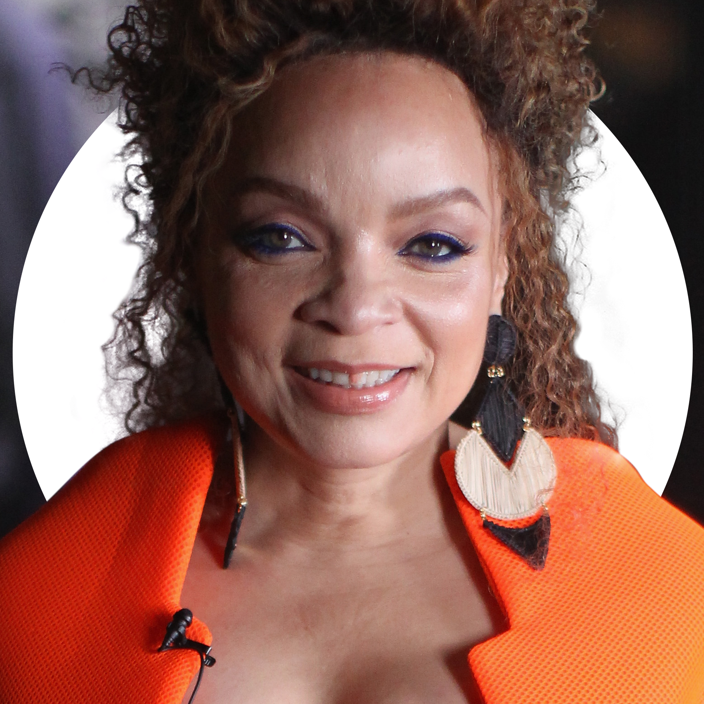
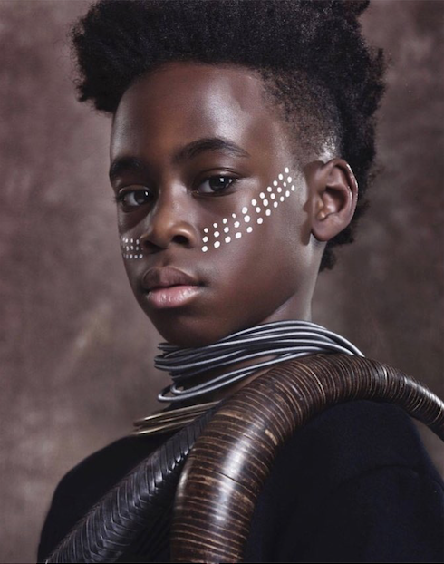

Une nation africaine technologiquement très avancée. T’Challa, roi légitime revient chez lui prendre sa place sur le trône. Avec l'apparution d'un vieil ennemi, son courage est mis à rude épreuve, aussi bien en tant que souverain qu’en tant que Black Panther. Le destin du Wakanda et celui du monde entier s'en retrouvent alors menacés.
Lupita Nyong’o est Nakia.
Espionne du Wakanda, elle fait le choix de quitter son luxueux pays d’origine pour aider les populations pauvres et exploitées des alentours, dans le cadre de missions secrètes. Loin des clichés habituels sur les personnages de "petites copines", elle est un véritable appui pour son roi. Elle se démarque tant par sa beauté, sa personnalité que sa combativité. Son avis est précieuse pour Black Panther qui l’écoute, prend en compte ses conseils et se construit en partie grâce à elle.
Angela B. est Ramonda
La reine du Wakanda, la mère de Black Panther est incarnée par une reine du cinéma hollywoodien. C’est elle qui a élevé le héros, de bons conseils la Reine-mère, défend fièrement son pays et soutient son fils envers et contre tous.
Danai Gurira est Okoye
Okoye guerrière sans peur, à la tête de la garde rapprochée du roi, elle a été formée pour défendre le Wakanda au péril de sa vie. Ce qui ne l’empêche pas de demander des comptes à son roi, si elle considère qu’il dirige mal son pays.
Letitia Wright est Shuri
Shuri est pleine d’humour et d’énergie. Scientifique de génie,elle conçoit le super-costume de son frère et lui invente toutes sortes de gadgets. Ses découvertes sont indispensables au bon fonctionnement du Wakanda.
Un génie? Oui... mais seulement. Lorsqu'il s'agit de passer à l’action, elle n’hésite pas à rejoindre les troupes, lourdement armée de ses dernières inventions.
Ses femmes sont un condensé de ce qu'il y a de mieux chez nous les femmes, la combativité, la loyauté ici au royaume du wakanda, le sens du sacrifice et pour finir la persévérance, elles n'abandonnent jamais.
Hors caméras, Ryan Coogler, le réalisateur du film, continue de surprendre et mise sur des femmes pour les mettre à des postes clés. Acte de symbolique de confiance et d'audace.
Hannah Beachler
Véritable pionnère est la première femme, qui plus est, est Noire, à réaliser les décors de Marvel. La capitale du Wakanda, les rues de la ville, la salle du trône, la savane au Baobab(...) sont l'oeuvre de son imagination.

Ruth Carter
Elle s'est vu confier la tâche immense de réaliser les costumes des personnages. Que ce soit les armures des Dora Milaje, la toje de Suri, les tenues de Nakia ou Okoye, Baku, etc... ainsi que la séléction des différentes coiffures, elles sont toutes la résultante de son bon gôut, réalisant un savant mélange entre tradition africaine et modernité.
Cet acte de confiance est largement récompensé en 2019; elles remportent chacunes un oscar.
L'impact de Shuri
C'est un plaisir inexplicable de voir une jeune femme intelligente, confiante, instinctivement vive sur un grand écran. Elle incarne parfaitement toutes ces qualités tout en inspirant simultanément les générations montantes et existantes de femmes noires, à la fois devant et hors caméra.
Elle s'inscrit véritablement dans la liste des rôles modèles positifs au cinéma. L'importance des filles noires dans les sciences téchnologies ingénurie et mathématiques (STEM) étant plus nécessaire que jamais.
Shuri peut avoir un rôle vital en inspirant les prochaines génération de filles partout dans le monde. Elle dirige le laboratoire de gadgets où toutes ses innovations prennent vie. Au-delà des armes, les inventions de Shuri sont axées sur l'innovation médicale, les transports, les communications et l'amélioration du mode de vie de ses citoyens. Elle est cette superhéroine qui aide Black Panther à sauver le monde.
Son rôle dans le laboratoire en tant qu'inventeure en chef et leader technologique est crucial pour créer un nouveau précédent. Le timing est critique alors que les discussions sur le manque de diversité dans la Silicon Valley se poursuivent, (elles ne représentent que 3%) il est plus important que jamais pour les jeunes femmes (noires tout particulèrement) de voir un personnage tel que Shuri et de vouloir s'en inspirer.
Shuri existe dans un univers fictif, oui bien sûr, mais si elle peut inspirer des filles qui n'auraient autrement pas envisagé une carrière dans la STEM, c'est vraiment une chose très puissante.
L'importance de la représentation
A l'heure où le visuelle prend une place prédominante dans nos vies, il est important de compendre que la représenation compte.
Les médias nous ont présenté au monde un standard de beauté unique: le caucasien.
Cela a malheureusement causé bien des dégats.
Les effets désastreux que le matracage d'une représentation peuvent avoir à un public à qu'il n'est pas destiné au préalable sont nombreux: éclaircissement de la peau, rejet de la tradition, de son accent par exemple, un rejet de son indentité entant que tel.
Ce sont les effets d'une abscence de représentaion de notre communauté dans des sphères d'excellence d'intelligence, de raffinement, de réussite, de beauté et de richesse. Et paradoxalement d'une sureprésentaion dans les sphères de l'échec, de la criminalité, l'illégalité, la bêtise ou encore la violence.

Il faut exposer à nos yeux à nos oreilles et ceux de nos enfants à la beauté de nos origines, notre créativité, nos intellectuels, notre art , notre littérature. Continuer à développer des supports qui mettent en valeurs des personnes inspirants qui nous ressemblent.
Élargir les rôles des personnages que nous voyons à l'écran, en particulier celui des scientifiques, est crucial. La nouvelle génération attend, et a soif d'inspiration, de modèles à qui elle peut s'identifier afin de consolider un monde où elle aura enfin sa place.
Les graines semées dans Black Panther ne tarderont certainement pas à porter du fruit.

.jpg)